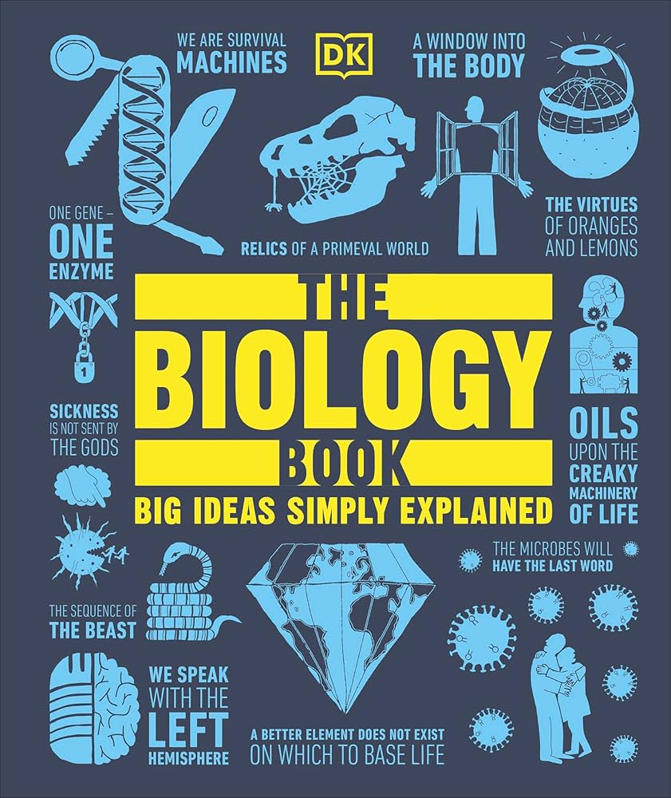

📖《DK生物学百科》系统介绍了生命科学的方方面面，从细胞的微观世界到生态系统的宏观视角，从DNA的双螺旋结构到物种进化的壮阔历程。书中涵盖了生物学史上最重要的发现和理论。
精美的插图和清晰的图解让复杂的生物学概念变得直观易懂，是生物学入门的理想选择。
我本身其实也是喜欢生物的，想当年高考的时候我还想过去上生命科学的专业，哈哈最后还是学了计算机干到了现在，看的很感触，里面的信息全面，入门首选。
读这本书的时候，有一种"平行世界的自己"的感觉。如果当年选择了生物学，现在的我会是什么样？也许正在实验室里培养细胞，或者在野外观察动物行为。不过，计算机和生物学其实有很多交集，生物信息学、计算生物学都是很有意思的领域。
书中的内容让我重新燃起了对生命科学的好奇心。从孟德尔的豌豆实验到CRISPR基因编辑，生物学的发展速度令人惊叹。特别是关于进化的章节，让我对"生命"这个概念有了更深的理解。每一个生命体都是亿万年进化的产物，这种复杂性远超任何人类设计的系统。作为计算机从业者，我不禁感叹：大自然才是最伟大的程序员。